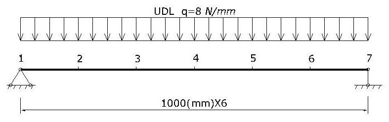

Getting started with OpenSees for Fire
In this section, basic guidance will be presented to help users get started with OpenSees for Fire. The following topics are discussed
- Download and Run OpenSees
- Run Thermo-mechanical Analysis in OpenSees
- Run Heat Transfer Analysis in OpenSees
- Model 'structure in fire' using SIFBuilder in OpenSees
Download and Run OpenSees
For users of OpenSeesThermal, the executable binary file is required to be downloaded, either with Tcl/Tk being installed in the right place in your operating system. The latest version of OpenSeesThermal could be downloaded from the Download page . also the web-link for downloading Tcl/Tk could be found over there.
Tcl should be installed properly in user's computer before running OpenSees. The installation should be directed to the directory as shwon as below;

Users are allowed to input their commands through the command line window directly,or use "source" command, which is highly recommended for its convenience.
When using "source" method, it is better to place the OpenSees.exe and the tcl command files in the same folder then you have a relatively short file path.

Run Thermo-mechanical Analysis
[Download the example package for Thermo-mechanical analysis]
Let's start from the "example-SteelBeam-uniform.tcl" which models a simply supported steel beam subjected to UDL and thermal action varying with time. The model configuration is shown as below:
- Model Builder
- Nodal definition
A basic model builder command is used here to initialise the model environmrnt, which will be created in a two dimensional plane and for each node it has three degrees of freedom
model BasicBuilder -ndm 2 -ndf 3;
Two external Tcl files are employed to visualise the model, which are pre-written by other developers and have been vastly used
source DisplayPlane.tcl;
source DisplayModel2D.tcl;
The coordinates of the beam nodes are defined using the node command, which are followed by the boundary conditions at the end nodes
node 1 0 0;
node 2 1000 0;
node 3 2000 0;
node 4 3000 0;
node 5 4000 0;
node 6 5000 0;
node 7 6000 0;
Run Heat Transfer analysis
[Download the example script for Heat Transfer analysis]
Using SIFBuilder
[Download the example script for SIFBuilder aided analysis]
This page is created by Liming Jiang, 2016